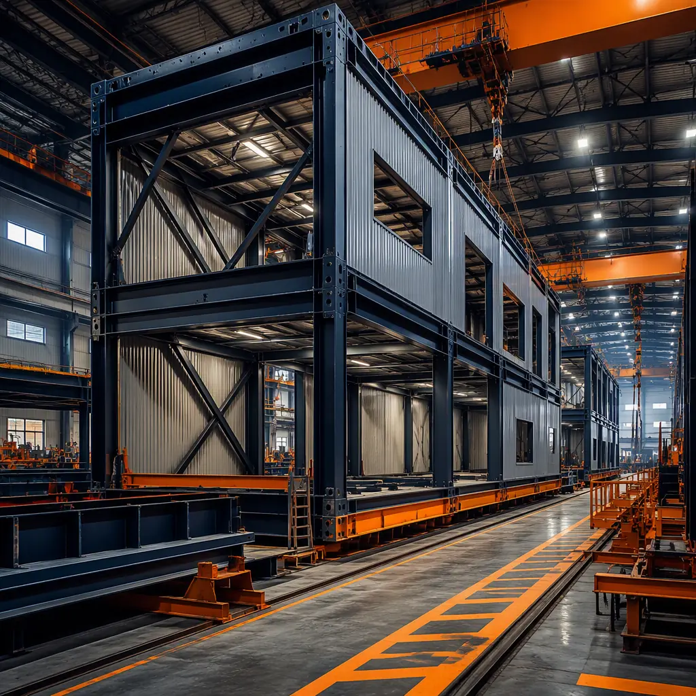
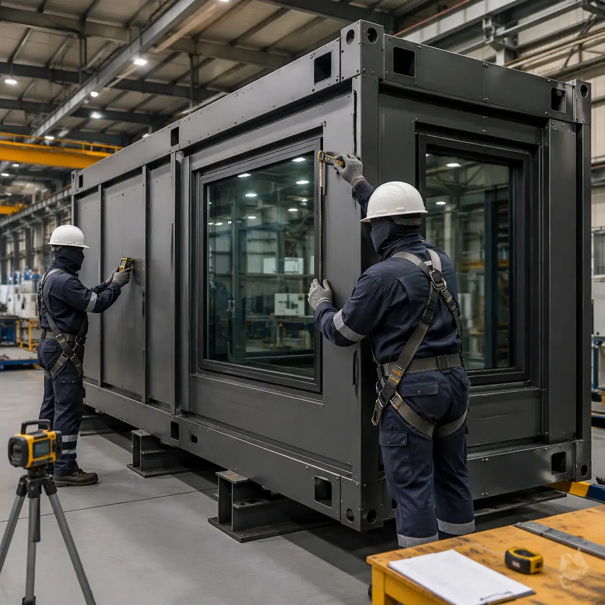
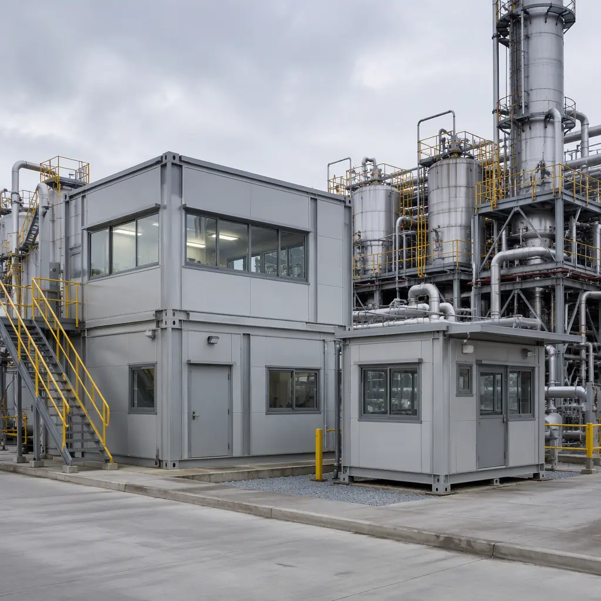
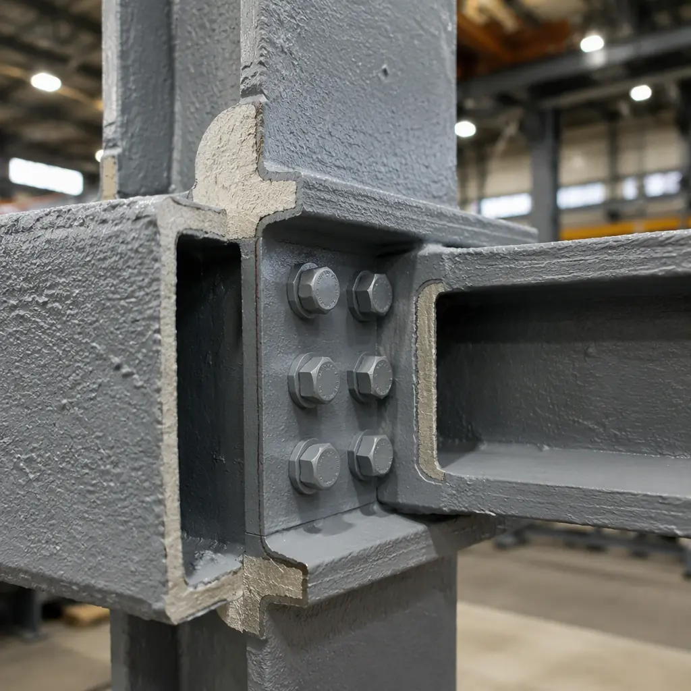

Industrial construction has long been considered the last frontier for modular adoption. While hotels, apartments, and offices have embraced factory-built methods for decades, the heavy industrial sector — chemical processing, petroleum refining, metals production, and hazardous-environment manufacturing — has remained tied to conventional site-built approaches. The assumption is understandable: industrial facilities demand blast-resistant structures, chemical corrosion protection, ATEX-rated electrical systems, fire ratings measured in hours rather than minutes, and structural tolerances that would challenge any construction method. But that assumption is increasingly wrong. This article examines how modular construction is being engineered into heavy industrial applications, where factory-controlled quality is not just an efficiency gain but a safety requirement, and why the same risk reduction logic that drove offshore oil platforms to modularization in the 1970s is now coming onshore.

Why Heavy Industry Is Different: The Four Threshold Requirements
Industrial facilities are regulated differently from commercial buildings because the consequences of failure are orders of magnitude higher. A structural defect in an apartment building might cause water intrusion; a structural defect in a chemical processing plant can cause a toxic release, an explosion, or an environmental disaster. The regulatory framework reflects this asymmetry. Four requirements define heavy industrial construction in ways that commercial modular has never had to address:
- Blast resistance (API RP 752/753, ASCE 59). Petrochemical facilities, refineries, and chemical plants must protect occupied buildings from vapor cloud explosions. A 3–5 psi blast overpressure — roughly the force that shatters windows and causes structural damage in conventional buildings — must be survivable for occupied structures within the facility. Blast-resistant modular buildings use reinforced steel frames, laminated glass with blast-rated framing, and structural connections designed to absorb energy without progressive collapse. The engineering is not fundamentally different from blast-resistant site-built structures, but the factory environment allows each module to be blast-tested or analyzed using computational fluid dynamics (CFD) models before it leaves the production line — a level of pre-delivery verification that site-built blast structures rarely achieve.
- Chemical corrosion protection (NACE SP 01-78, ISO 12944). Industrial facilities handling acids, caustics, solvents, and process chemicals require corrosion protection that goes far beyond commercial building standards. Modular construction delivers this through factory-applied protective coating systems: epoxy primers (typically 4–6 mils DFT), high-build epoxy or polyurethane intermediate coats (6–8 mils DFT), and chemical-resistant topcoats (3–5 mils DFT) for a total system thickness of 13–19 mils dry film thickness. These coatings are applied in a climate-controlled factory, not in the field where humidity, temperature, and dust compromise adhesion and cure. The difference in coating integrity between factory-applied and field-applied systems is measurable: factory-applied systems typically show fewer than 2% coating defects on holiday testing (spark testing for pinholes), compared to 8–15% for field-applied coatings on industrial sites.
- Hazardous area classification (ATEX/IECEx, NEC Class I/II/III). Areas where flammable gases, vapors, or combustible dusts may be present require electrical systems designed to prevent ignition. ATEX Zone 1 or Zone 2 classification in European and international projects, or NEC Class I Division 1 or Division 2 in North American projects, demands explosion-proof enclosures, intrinsically safe circuits, pressurized equipment rooms, and sealed conduit systems. Modular construction's advantage is pre-installation and factory testing: the entire electrical package for a hazardous-area module can be installed, pressure-tested, and certified by a notified body before the module leaves the factory. On a traditional industrial site, hazardous-area electrical work is performed piecemeal, tested after installation, and frequently requires rework when inspections identify non-conformances.
- Fire-rated structural assemblies (UL 1709, ISO 834, ASTM E119). Industrial fires burn hotter and faster than commercial building fires because the fuel load includes process chemicals, hydrocarbon inventories, and pressurized systems. Fire ratings for industrial structures are specified in terms of hydrocarbon fire curves (UL 1709) rather than the cellulosic fire curves (ASTM E119) used for commercial buildings. A hydrocarbon fire reaches 1,100°C within 5 minutes; a cellulosic fire reaches that temperature in 30–60 minutes. The structural steel in an industrial modular building must retain its load-bearing capacity for 2–4 hours under a hydrocarbon fire curve — requiring intumescent coatings, cementitious fireproofing, or composite concrete-encased steel sections that are factory-installed under controlled conditions and verified by third-party inspection before module shipment.

Chemical Processing Facilities: Modular Building Blocks for Aggressive Environments
Chemical plants are the archetypal heavy industrial application for modular construction because they share the same logic as process skids — the pre-assembled, pre-tested equipment packages that the chemical industry has used for decades. A process skid contains pumps, valves, instrumentation, and piping mounted on a structural steel frame; it is built and tested in a fabrication shop, then transported to the site for connection to the larger process. Modular buildings extend this logic from the equipment level to the facility level.
For a specialty chemical production facility, the modular scope typically includes: control rooms (blast-resistant, with pressurized HVAC to prevent vapor ingress, redundant power and communications), operator shelters (attached to process units, with 2-hour fire separation from the process area), analytical laboratories (with fume hood exhaust, specialty gas distribution, and vibration-isolated instrument benches), and administrative/change-house modules (locker rooms, decontamination showers, and office space for operations staff). Each module is engineered to the same process safety standards as the process equipment it serves, with the same documentation — material test reports, coating inspection records, pressure test certificates — that industrial owners require for their capital project records.
The cost comparison for chemical plant buildings is revealing. A 5,000 sq ft control room building built traditionally on an operating chemical plant site typically costs $450–$650 per sq ft, driven by the need for hot-work permits, area shutdowns during construction, continuous atmospheric monitoring, and the productivity penalty of working in personal protective equipment (PPE) in a hazardous environment. A modular equivalent, fabricated off-site and delivered as 6–8 completed modules, costs $350–$480 per sq ft — a 20–35% reduction — and eliminates 70% of the site labor hours that create safety exposure and operational disruption. For a broader analysis of modular construction costs across building types, our cost per square foot benchmark provides sector-specific data.
| Industrial Building Type | Traditional Site-Built ($/sq ft) | Modular Factory-Built ($/sq ft) | Site Labor Reduction |
|---|---|---|---|
| Blast-resistant control room | $500–700 | $380–520 | 60–70% |
| Operator shelter (process unit adjacent) | $350–500 | $280–400 | 65–75% |
| Analytical laboratory module | $400–550 | $320–440 | 50–60% |
| Administrative/change-house | $250–380 | $190–280 | 55–65% |
Metals, Mining, and Mineral Processing
Metals production facilities — steel mills, aluminum smelters, copper refineries, and mineral processing plants — share a common challenge: the construction site is the production site. Building a new control room or laboratory next to an operating electric arc furnace, a molten metal transfer area, or a grinding mill circuit means working in an environment with ambient temperatures of 40–60°C, airborne particulate concentrations that reduce visibility to meters, and noise levels exceeding 100 dBA. These are not environments where precision construction thrives.
Modular construction removes the building from the environment during the construction phase. The modules are fabricated in a clean factory, transported to the site, and set in place over 2–4 days using cranes — reducing the site construction window from 16–24 weeks to a 1–2 week installation window. For mining operations where every hour of production downtime costs tens of thousands of dollars, this schedule compression is the primary value driver. For mining camp and remote workforce accommodations, see our mining and remote industrial camps guide.
The specific engineering requirements for metals processing buildings include: high-temperature thermal protection (insulation systems rated for continuous service at 150–250°C on the process-facing side), electromagnetic interference (EMI) shielding for control rooms adjacent to electric arc furnaces and induction melting equipment, and vibration isolation for laboratory and instrument buildings located near crushers, ball mills, and forging presses. These systems are factory-installed and factory-tested — the EMI shielding effectiveness can be measured before the module leaves the factory, rather than hoping the field installation achieves the specified attenuation.

Oil Refining and Petrochemical: Where Modular Is Already Proven
The downstream oil and gas sector has been modularizing process equipment for 50 years — the hydrocracker reactor that arrives on a special-purpose transporter, the prefabricated pipe rack sections that span hundreds of feet, the modular compressor stations that arrive with all rotating equipment aligned and tested. What has lagged is the modularization of the buildings that support these process units: the control rooms, substations, analyzer shelters, and administrative facilities that occupy 15–25% of a refinery's total capital expenditure but carry disproportionate schedule risk because they are on the critical path to commissioning.
A refinery expansion project that requires a new 10,000 sq ft satellite control room traditionally faces a 14–18 month construction sequence: civil and foundations (3–4 months), structural steel erection (2–3 months), building enclosure (2–3 months), MEP rough-in (2–3 months), interior finishes and systems integration (3–4 months), and commissioning (2–3 months). A modular approach compresses this to 9–11 months: civil and foundations (3–4 months, concurrent with module fabrication), module delivery and setting (1–2 weeks), module-to-module connections and commissioning (2–3 months). The 5–7 month schedule reduction means the new process unit can begin commissioning months earlier — and for a refinery processing 250,000 barrels per day, each month of accelerated startup is worth $15–25 million in gross margin at typical refining spreads.
For refinery projects specifically, the fire protection requirements demand engineering attention beyond commercial modular standards. A control room in a refinery must withstand a hydrocarbon pool fire for 2–4 hours, with the structural steel maintaining load-bearing capacity at temperatures exceeding 1,000°C. This requires intumescent epoxy coatings applied at 10–25 mils dry film thickness per coat, with multiple coats to achieve the specified fire resistance duration. Factory application of these coatings — with dry film thickness measured and documented for every structural member — eliminates the single largest source of fireproofing defects in site-built industrial buildings: inconsistent application thickness in hard-to-reach areas. For more on fire safety in modular buildings, see our fire safety design guide.
Pharmaceutical and Fine Chemical GMP Facilities
The pharmaceutical industry's Good Manufacturing Practice (GMP) requirements create an overlap between heavy industrial construction and cleanroom construction. A GMP facility producing active pharmaceutical ingredients (APIs) must simultaneously satisfy: hazardous area classification (solvent processing areas are typically ATEX Zone 1 or NEC Class I Division 1), cleanroom classification (ISO 7 or ISO 8 for API processing suites), and GMP material and personnel flow segregation (raw material in, product out, personnel in/out, waste out — all through separate pathways with no cross-contamination).
This regulatory triple requirement makes pharmaceutical GMP facilities among the most expensive buildings per square foot in the industrial sector ($800–$1,500 per sq ft for API facilities). Modular construction addresses the cost by moving the complexity into the factory: the cleanroom envelope, the hazardous-area electrical system, the HVAC with HEPA terminal filtration and pressure cascades, and the segregated corridors are all pre-built, pre-tested, and pre-certified. For a detailed treatment of pharmaceutical and GMP modular construction, our pharmaceutical GMP facilities guide covers validation, commissioning, and regulatory submission requirements.
For laboratory facilities that share cleanroom requirements without the GMP manufacturing burden, see our lab and research facilities construction guide, which covers biosafety levels, fume hood infrastructure, and vibration-sensitive equipment foundations.

Factory Quality Control: Why Industrial Owners Are Adopting Modular
Industrial owners do not adopt new construction methods because they are faster or cheaper — they adopt them because they are safer and more reliable. The reason offshore oil platforms were modularized in the North Sea in the 1970s was not cost: it was safety. Building accommodation modules, control rooms, and utility buildings onshore in fabrication yards, then lifting them onto the platform, eliminated thousands of construction hours performed at height over open water. The same logic now applies onshore.
The factory quality control advantage for industrial modular construction can be measured in specific inspection points that site-built industrial construction cannot replicate: 100% volumetric inspection of structural welds (ultrasonic testing or radiography, impractical for field welds at scale), coating dry film thickness measurement on every structural member with electronic gauges and digital records, pressure testing of hazardous-area electrical enclosures before they are exposed to the production environment, and factory acceptance testing of integrated systems (HVAC pressurization, fire alarm logic, emergency shutdown interfaces) that verifies system functionality before module shipment. For a facility where a control system failure could trigger a process safety incident, the ability to test the control room as a complete, integrated unit before it arrives on site is not a luxury — it is a risk management requirement.
For developers and industrial owners evaluating modular as a construction delivery method, our modular vs. traditional quality comparison provides side-by-side data on defect rates, inspection pass rates, and rework costs across both approaches. For the project management framework that supports industrial modular delivery, see our project risk reduction guide.
MODURA engineers heavy industrial modular buildings to the same process safety standards as the process equipment they serve — with full material certification, coating inspection records, pressure test certificates, and factory acceptance test documentation. Contact our industrial team to discuss your next heavy industrial facility project.